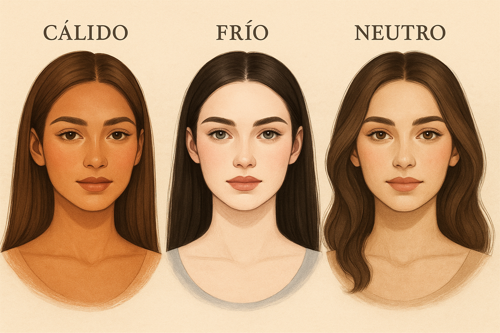

MAQUILLAJE Y SUBTONO · 28 de mayo, 2025
A la hora de encontrar un maquillaje que resalte tus rasgos, es fundamental saber el subtono de tu piel
La clave está en conocer el subtono de tu piel. No se trata solo del color superficial, sino de esa tonalidad subyacente que define qué colores te favorecen más en maquillaje.
Usar tonos que armonicen con tu subtono ayuda a que tu rostro se vea más fresco, natural y radiante. Si te maquillás con colores que no te favorecen, podés notar que tu piel parece apagada o incluso enfermiza.

Hay tres grandes grupos:
1- Subtono cálido: tu piel tiene matices dorados, amarillos o melocotón.
2- Subtono frío: predominan matices rosados, azulados o rojizos.
3- Subtono neutro: mezcla equilibrada entre frío y cálido.
Elegir una base con el subtono correcto hace que se funda con tu piel en lugar de parecer una máscara:
Un rubor correcto aporta frescura al rostro, y el labial adecuado puede transformar por completo tu look.
Elegí sombras y delineadores según tu temperatura:
1- Iluminadores: Si sos cálida, usá champagne o dorado claro. Si sos fría, usá perla o rosado hielo.
2- Evita contrastes forzados: si tu piel es suave, colores muy intensos pueden endurecer tus rasgos.
3- Probalo a la luz natural: Siempre testea tu base y labial al lado de una ventana antes de comprar.
4- Consultá tu estación: Tu subtono influye directamente en tu estación colorimétrica, que a su vez te orienta sobre los tonos más armónicos para todos tus productos de belleza.